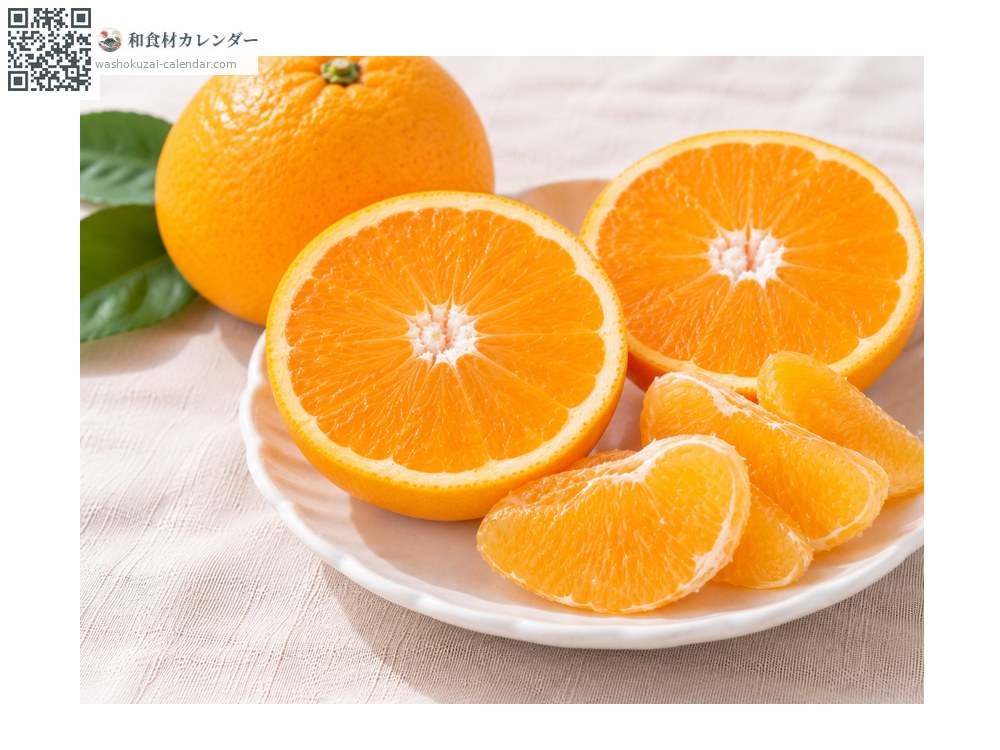
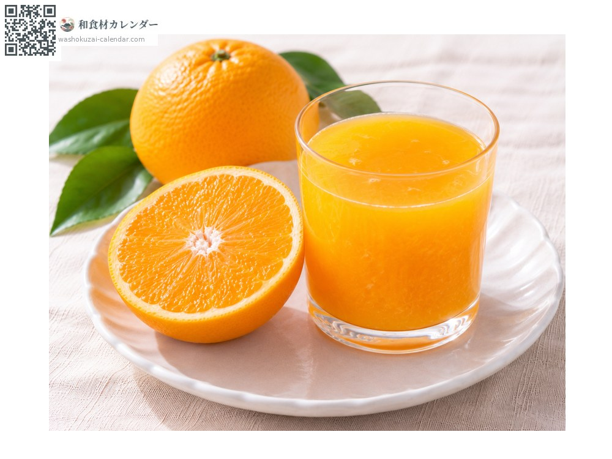
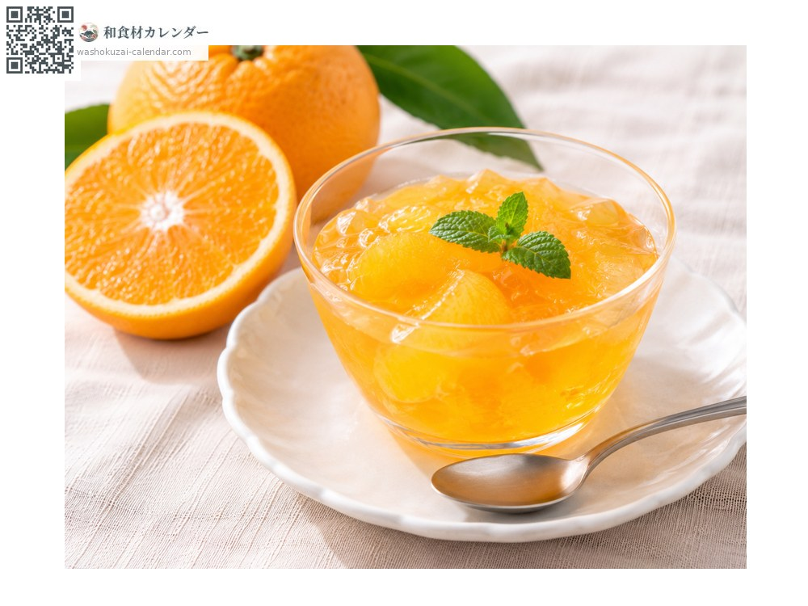
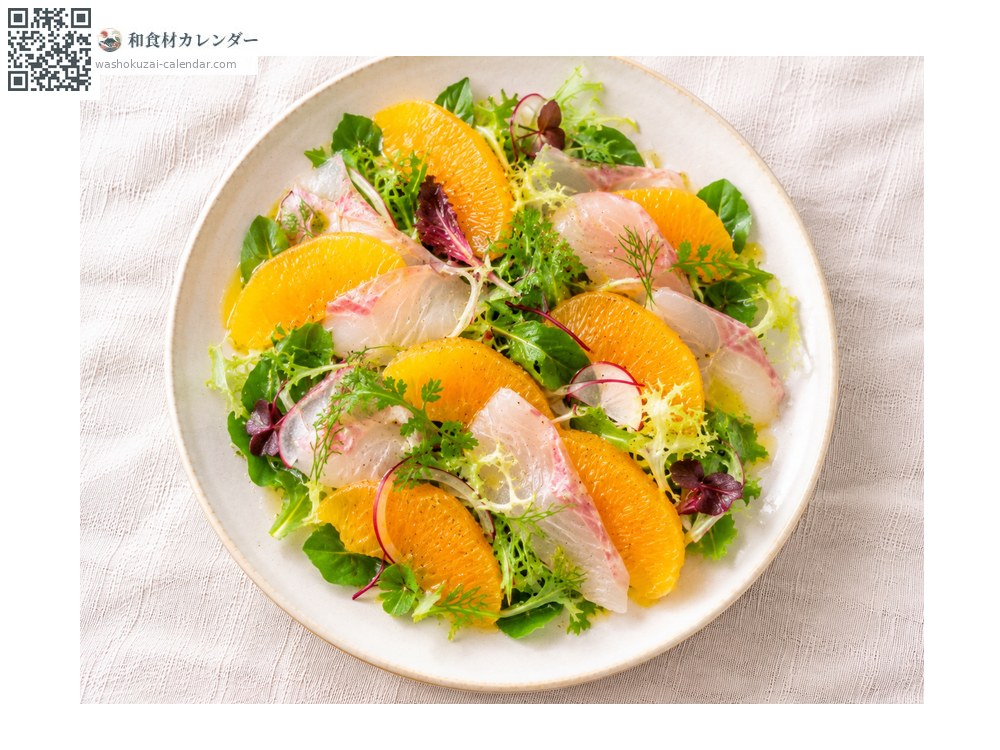

水果
清见柑
清見 きよみ kiyomi
别名kiyomi、mikan
应季时期为3月、4月

应季时期
1月
2月
3月
4月
5月
6月
7月
8月
9月
10月
11月
12月
应季有供应
烹饪方法

直接生食
薄膜薄到可以连着吃，果汁丰富。

果汁
只要榨汁就能呈现浓郁的橘色。

果冻
果汁连同果瓣一起凝固。

沙拉
与白肉鱼生鱼片搭配。
挑选方法
果皮薄而光滑、拿起来沉甸甸的。果蒂细小。
保存方法
装袋防止干燥，放入冰箱蔬果室。
主要产地
小知识
由温州蜜柑与多罗维塔柳橙杂交，1979年登记，是日本第一个橘橙杂交种。名称取自静冈市的清见寺。它是不知火等品种的亲本，现今日本许多高级柑橘都源自这个品种。